Lay Out Apps in App Designer Design View
Design View in App Designer provides a rich set of layout tools for designing modern, professional-looking applications. It also provides an extensive library of UI components, so you can create various interactive features. Any changes you make in Design View are automatically reflected in Code View. Thus, you can configure many aspects of your app without writing any code.
To add a component to your app, use one of these methods:
Drag a component from the Component Library and drop it on the canvas.
Click a component in the Component Library and then move your cursor over the canvas. The cursor changes to a crosshair. Click your mouse to add the component to the canvas in its default size, or click and drag to size the component as you add it. Some components can only be added in their default size.
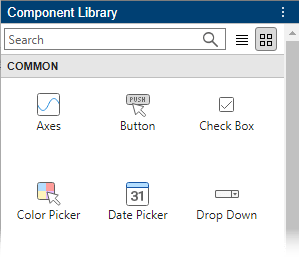
The name of the component appears in the Component Browser after you add it to the canvas. You can select components in either the canvas or the Component Browser. The selection occurs in both places simultaneously.
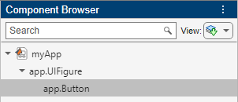
Some components, such as edit fields and sliders, are grouped with a label when you drag them onto the canvas.
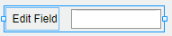
These labels do not appear in the Component Browser by default, but you can add them to the list by right-clicking anywhere in the Component Browser and selecting Include component labels in Component Browser. If you do not want the component to have a label, you can exclude it by pressing and holding the Ctrl key as you drag the component onto the canvas. If you want to add a label to a component without one, right-click the component and select Add Label.
If a component has a label, and you change the label text, the name of the component in the Component Browser changes to match that text. You can customize the name of the component by double-clicking it and typing a new name.
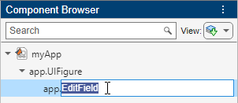
Customize Components
You can customize the appearance of a component by selecting it and then editing its properties in the component tab of the Component Browser. For example, from the Button tab you can change the alignment of the text that displays on a button.
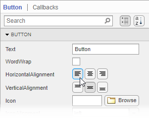
Some properties control the behavior of the component. For example, you can change the range of values that a numeric edit field accepts by changing the Limits property.
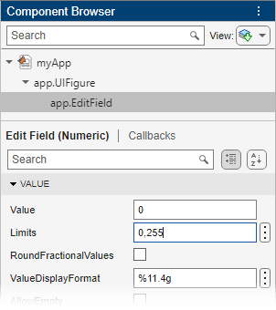
When the app runs, the edit field accepts values only within that range.
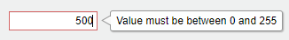
You can edit some properties directly in the canvas by double-clicking the component. For example, you can edit a button label by double-clicking it and typing the desired text. To add multiple lines of text, hold down the Shift key and press Enter.
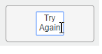
Align and Space Components
In Design View, you can arrange and resize components by dragging them on the canvas, or you can use the tools available in the Canvas tab of the toolstrip.
App Designer provides alignment hints to help you align components as you drag them in the canvas. Orange dotted lines passing through the centers of multiple components indicate that their centers are aligned. Orange solid lines at the edges indicate that the edges are aligned. Perpendicular lines indicate that a component is centered in its parent container.
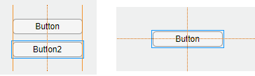
As an alternative to dragging components on the canvas, you can align components using the tools in the Align section of the toolstrip.
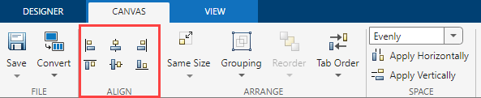
When you use an alignment tool, the selected components align to an anchor component. The anchor component is the last component selected, and it has a thicker selection border than the other components. To select a different anchor, hold down the Ctrl or Shift key and click the desired component twice (once to deselect the component, and a second time to select it again). For example, in the following image, the Format Options label is the anchor. Clicking the Align left 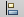 button aligns the left edges of the drop-down and check box to the left edge of the label.
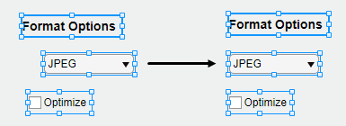
You can control the spacing among neighboring components using the tools in the Space section of the toolstrip. Select a group of three or more components, and then select an option from the drop-down list in the Space section of the toolstrip. The Evenly option distributes the space evenly within the space occupied by the components. The 20 option spaces the components 20 pixels apart. If you want to customize the number of pixels between the components, type a number into the drop-down list.
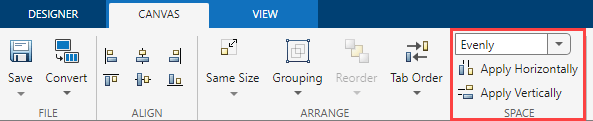
Next, click Apply Horizontally 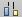 or Apply Vertically 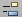. For example, select Evenly and then click Apply Vertically to distribute the space among a vertical stack of components.
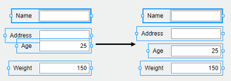
Group Components
You can group two or more components together to modify them as a single unit. For example, you can group a set of components after finalizing their relative positions, so you can then move them without changing that relationship.
To group a set of components, select them in the canvas, and then select Grouping > Group in the Arrange section of the toolstrip.
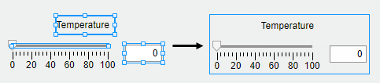
The Grouping tool also provides functionality for these common tasks:
Ungroup all components in a group — Select the group. Then select Grouping > Ungroup.
Add a component to a group — Select the component and the group. Then select Grouping > Add to Group.
Remove a component from a group — Select the component. Then select Grouping > Remove from Group.
Reorder Components
You can change the order in which components stack on top of each other by using the Reorder tool in Design View.
For example, create a label and then create an image. By default, the image appears on top of the label. The default view of the Component Browser shows the components based on their stacking order, with the image first since it is on top and the label second.
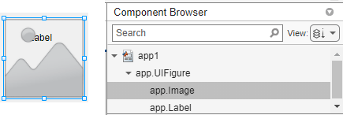
To reorder the components so that the label is on top of the image, select the image on the canvas, and then select Reorder in the toolstrip. You can also right-click the image and select the Reorder tool. Send the image backward by choosing Send Backward.
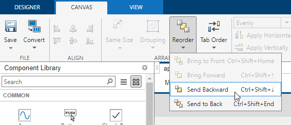
The image now is behind the label. When you reorder components, the order of the components inside the Component Browser also changes.
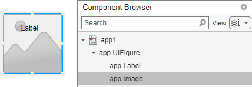
Modify Tab Focus Order of Components
When users run your app, they can use the Tab key to navigate between app components. To view the order in which the components come into focus when a user presses Tab, expand the View drop-down list in the Component Browser and select Sort & Filter by Tab Order. The Component Browser lists only the components in the app that can have focus, in the order of focus. You can change the tab order of the components by clicking and dragging the component names in the Component Browser.
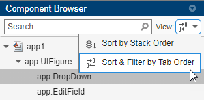
Alternatively, App Designer can automatically apply a left-to-right and then
top-to-bottom tab focus order for components. Right-click the name of the container
in the Component Browser and select Apply Auto Tab
Order. For example, in an app with stacked edit fields for app users
to enter their first name, last name, and age, right-click the
app.UIFigure node in the Component
Browser and apply automatic tab ordering. When users the app, they
can use the Tab key to navigate between the edit fields and enter a
first name, then a last name, and finally an age.
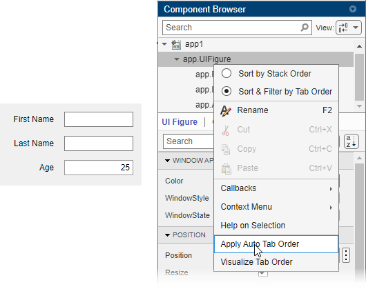
Replace Components
You can convert one type of component to another similar type of component. Right-click the component on the canvas and select Replace With. Then, select the component type to convert to. Replacing one component with another preserves property values and callbacks that exist for both components.
For example, create a drop-down component with some items. Configure the color of
the component by specifying the BackgroundColor
property.
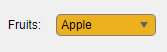
Replace the drop-down component with a list box that contains the same items by
right-clicking the drop-down component and selecting Replace With > List Box. Because the list box also has a BackgroundColor
property, the specified color is preserved.
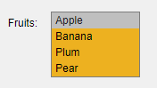
Arrange Components in Containers
When you drag a component into a container such as a panel, the container turns blue to indicate that the component is a child of the container. This process of placing components into containers is called parenting.
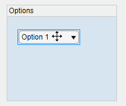
The Component Browser shows the parent–child relationship by indenting the name of the child component under the parent container.
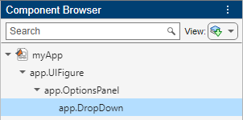
Create and Edit Context Menus in App Designer
There are several ways to create context menus in App Designer. Since context menus are visible only when you right-click a component in the running app, they do not appear in the figure when you are in Design View. This makes the workflow for editing context menus slightly different than for other components. These sections describe the ways to create and edit context menus.
Create Context Menus
To create a context menu, drag it from the Component
Library onto the UI figure or another component. This assigns the
context menu to the ContextMenu property of that component.
When you create a context menu it appears in an area on the canvas below the
figure. This Context Menus area gives you a preview of each
context menu you created and indicates how many components each one is assigned
to. For example, this is how one set of context menus might appear on the
canvas:
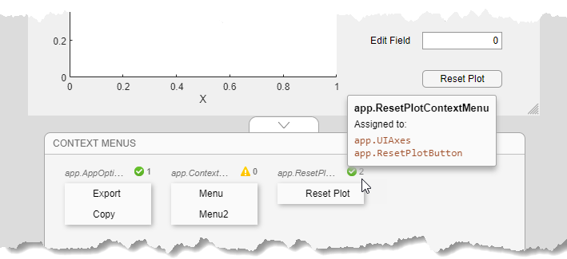
If you want to create a context menu without assigning it to a component, drag it to the Context Menus area instead.
Alternatively, create and assign a context menu to a specific component by right-clicking on that component and selecting Context Menu > Add New Context Menu.
All context menus are created as children of the UI figure and are added to the Component Browser, even if they are not assigned to a component.
Edit Context Menus
Edit a context menu by double-clicking it in the Context Menus area or by right-clicking it and selecting the edit option for the name of your menu. This brings the context menu into the Context Menus editing area where you can edit and add menu items and submenus.
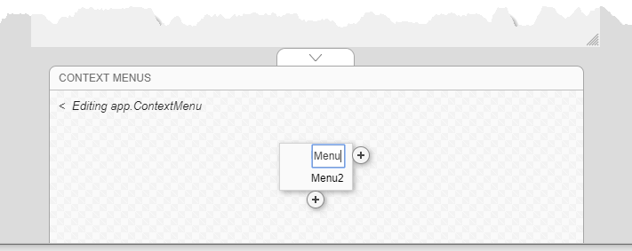
When you are finished editing, click the back arrow (<) to exit the edit area.
Change Context Menu Assignments
To disassociate a context menu from a component, right-click the component and select Context Menu > Unassign Context Menu.
To replace the context menu that is assigned to a component with another one, you can drag the context menu onto the component, or you can right-click the component, click Context Menu > Replace With, and select one of the other context menus you have created. If you only created one context menu, then the Replace With option does not appear.
Alternatively, select a component in the Component Browser and select Interactivity from the component tab. Then, expand the ContextMenu drop-down list and select a different context menu to assign to the component.